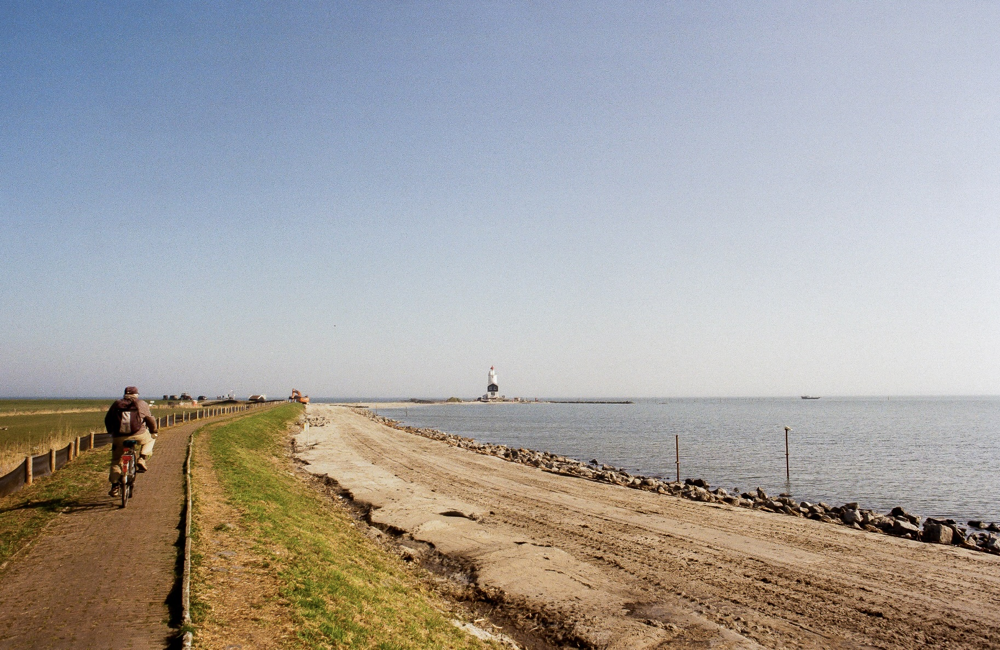

Work
Projects, research, and policy interests
A selection of academic and professional work.
Go to workPolitical Science · Public Policy · Internet Governance
Based in Amsterdam. Interested in politics, governance, and how domestic questions connect to wider systems.

Explore
Work
A selection of academic and professional work.
Go to workCV
Education, roles, and a concise overview of my path so far.
View CVPhotography
A personal selection of photographs.
Open photographySelected Work
Featured Project
[Short one- or two-line summary of a featured project, thesis, or research topic.]
See projectProject / Research
[Short supporting description.]
Project / Writing
[Short supporting description.]
CV
Current
[Institution / team / short note]
Education
[University / field / year]
Focus
[Short note on themes or specialization]
Photography